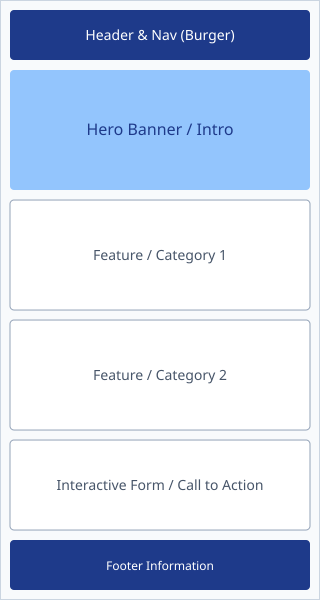
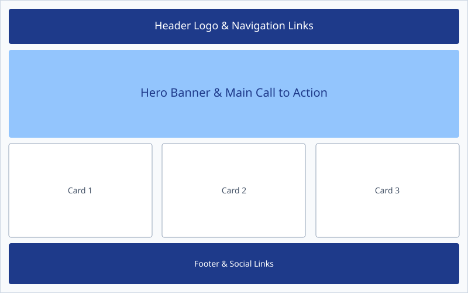

Site Name
Name: Lira Fresh Bites
Reasoning: This name represents a local snack and beverage enterprise located in Lira, Uganda. It communicates freshness, quick service, and delicious food options for local customers and visitors.
Optional Domain: lirafreshbites.com
Site Purpose
The site serves as a digital menu, ordering hub, and information portal for Lira Fresh Bites. It provides menu offerings, pricing, store location details, opening hours, and an interactive dynamic form where customers can customize and place online snack orders for pickup or local delivery.
Target Audience Scenarios
- Scenario 1: "What fresh snack and juice combos are available today, and what are their prices?"
- Scenario 2: "How can I place an online order for pickup at the store during my lunch break?"
Color Scheme
The site utilizes the following brand colors to project a fresh, welcoming, and high-contrast appearance:
#1e3a8a
(Header, Footer, Headings)
#d97706
(Buttons, Highlights, Badges)
#f8fafc
(Page Background, Card Fill)
Typography
Primary Heading Font: Montserrat (sans-serif) — Used for all section headers and title banners.
Body Text Font: Open Sans (sans-serif) — Used for body text, lists, and form inputs for optimal readability.
Wireframes
Layout plans for the homepage across mobile and desktop viewport sizes:

